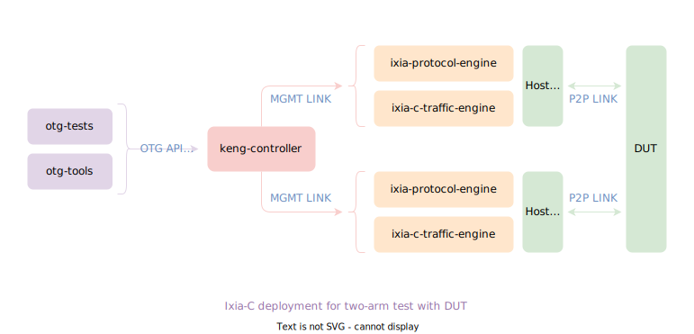
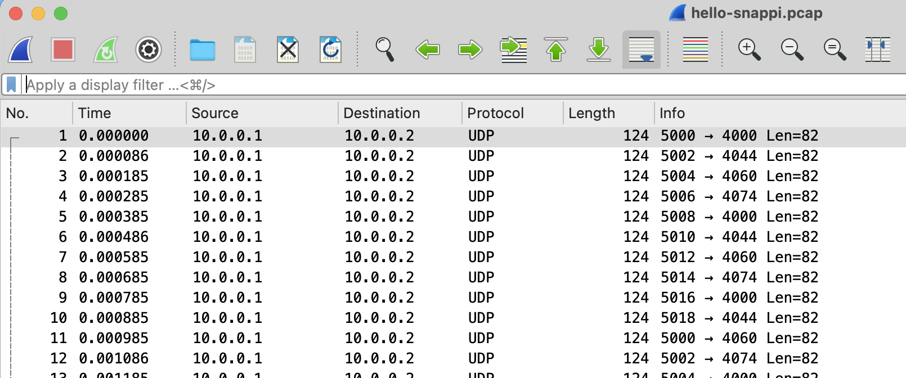

First script
Use Case
This tutorial explains some key elements that are required to write a snappi script for exercising the following topology.
- Send 1000 UDP packets back and forth between the interfaces
eth1ð2at a rate of 1000 packets per second. - Ensure that the correct number of valid UDP packets are received on both the ends, by using port capture and port metrics.
The hello_snappi.py script covers this extensively.

Setup
You can start by setting up the topology as described above. For more detail, see deployment steps for two-arm scenario.
git clone --recurse-submodules https://github.com/open-traffic-generator/ixia-c && cd ixia-c
docker-compose -f deployments/raw-two-arm.yml up -d
After the set up is completed, install the python packages:
- snappi - client SDK auto-generated from Open Traffic Generator API.
- dpkt - for processing
.pcapfiles.
Create the API Handle
The first step in any snappi script is to import the snappi package and instantiate an api object, where the location parameter takes the HTTPS/gRPC address of the controller and verify is used to turn off the insecure certificate warning.
If the controller is deployed with a non-default TCP port by using the deployment parameters, it must be specified explicitly in the address (default port of HTTPS is 8443 and gRPC is 40051).
import snappi
# HTTPS
api = snappi.api(location='https://localhost', verify=False)
# or with non-default TCP port
api = snappi.api(location='https://localhost:8080', verify=False)
#gRPC
api = snappi.api(location="localhost:40051", transport=snappi.Transport.GRPC)
# or with non-default TCP port
api = snappi.api(location="localhost:50020", transport=snappi.Transport.GRPC)
Expand This section provides the details on an optional parameter ext which specifies the snappi extension to be loaded.
If a traffic generator does not natively support the [Open Traffic Generator API](https://github.com/open-traffic-generator/models), snappi can be extended to write a translation layer to bridge the gap. For example, [snappi extension for IxNetwork](https://pypi.org/project/snappi-ixnetwork/). This can be installed by using `python -m pip install --upgrade snappi[ixnetwork]`.
Configuration
You need to construct the traffic configuration to send it to the controller. Use the api object that you created previously. It will act as a handle for the following steps:
- Create new objects for API request (or response)
api.config()is a factory function for creating an emptysnappi.Configobject, which encapsulates the parameters that the controller needs to configure different aspects of the traffic generator. The next sections discuss about these configuration parameters in details.
- Initiate the API requests (and get back response)
# this pushes object of type `snappi.Config` to controller
api.set_config(cfg)
# this retrieves back object of type `snappi.Config` from controller
cfg = api.get_config()
By default, API requests in snappi are made over HTTPS with payloads as a JSON string. Since each object in snappi inherits
SnappiObjectorSnappiIter, they all share a common method called.serialize()anddeserialize(), that are used internally during the API requests, for valid conversion to / from a JSON string. You will find more about such conveniences offered by snappi along the way.
Expand This section explains how you can effectively navigate through the snappi API documentation.
The objects and methods (for API calls) in snappi are auto-generated from an [Open API Generator YAML file](https://redocly.github.io/redoc/?url=https://raw.githubusercontent.com/open-traffic-generator/models/v0.11.11/artifacts/openapi.yaml). This file adheres to the [OpenAPI Specification](https://github.com/OAI/OpenAPI-Specification), which can (by design) also be rendered as an interactive API documentation. [ReDoc](https://redocly.github.io/redoc/) is an open-source tool that provides a similar functionality. It accepts a link to valid OpenAPI YAML file and generates a document where all the methods (for API calls) are mentioned in the left navigation bar and for each selected method, there's a request/response body description in the center of the page. These descriptions lay out the entire object tree that documents each node in detail. The [snappi API documentation](https://redocly.github.io/redoc/?url=https://raw.githubusercontent.com/open-traffic-generator/models/v0.11.11/artifacts/openapi.yaml) will always point to the API version **v0.11.11**. To use a different version, do the following: * Identify the API version from [open-traffic-generator releases](https://github.com/open-traffic-generator/snappi/releases/download/v0.11.11/models-release) and replace **v0.11.11** in the URL with the intended snappi version. * Open the [open-traffic-generator models](https://redocly.github.io/redoc/?url=https://raw.githubusercontent.com/open-traffic-generator/models/v0.11.11/artifacts/openapi.yaml).
Ports
Each instance of a traffic-engine is usually referred to as a port. As the ports are used to send or receive the traffic (as they are directly bound to the network interfaces), provide the following information to the config object, that you created earlier:
name: An unique identifier for each port.location: A DNS name or TCP socket address of the traffic-engine (format is specific to a given traffic-engine implementations).
Note: Unlike the config, creating a new port using
p = api.port()is not required (and hence not supported), as thesnappi.Portis never used directly as an API request or response.
# config has an attribute called `ports` which holds an iterator of type
# `snappi.PortIter`, where each item is of type `snappi.Port` (p1 and p2)
p1, p2 = cfg.ports.port(name="p1", location="localhost:5555").port(
name="p2", location="localhost:5556"
)
Instead of using
append(), use factory method.port()oncfg.portswhich instantiatessnappi.Port, appends it tocfg.ports, and returns the entire iterator (so that it can be unpacked or accessed like a simple list). This is applicable to other iterators in snappi, for example, flows, capture, and layer1.
Expand this section for more examples on snappi iterators.
p = cfg.ports.port(name='p1').port(name='p2')
assert p[0].name == 'p1'
p = cfg.ports.port(name='p3')
assert p[2].name == 'p3'
# This will remove 3rd index port
cfg.ports.remove(2)
p4 = cfg.ports.port(name='p4')[-1]
assert p4.name == 'p4'
# This will clear all the ports
cfg.ports.clear()
p5 = cfg.ports.port(name='p5')[0]
assert p5.name == 'p5'
p6 = cfg.ports.add(name='p6')
assert p6.name == 'p6'
p7 = p6.clone()
p7.name = 'p7'
cfg.ports.append(p7)
assert p7.name == 'p7'
Layer1
The ports that you configured earlier, may require a set up for layer1 (physical layer) properties like speed, MTU, promiscuous mode, and etc.
# config has an attribute called `layer1` which holds an iterator of type
# `snappi.Layer1Iter`, where each item is of type `snappi.Layer1` (ly)
ly = cfg.layer1.layer1(name="ly")[-1]
ly.speed = ly.SPEED_1_GBPS
# set same properties on both ports
ly.port_names = [p1.name, p2.name]
Note: You can set an enum value (all uppercase) defined in the
ly's namespace, instead of using an arbitrary value to thely.speed. These enum values are available in the snappi API documentation.
Capture
To start capturing packets on both the ports, enable capture.
# config has an attribute called `captures` which holds an iterator of type
# `snappi.CaptureIter`, where each item is of type `snappi.Capture` (cp)
cp = cfg.captures.capture(name="cp")[-1]
cp.port_names = [p1.name, p2.name]
Flows
This section describes how to set up the traffic flows.
Each flow in snappi can be characterized based on the tx/rx endpoints, duration, packet contents, packet rate, packet size, and etc.
You can configure two flows, one that originates from port p1 and the other from port p2.
# config has an attribute called `flows` which holds an iterator of type
# `snappi.FlowIter`, where each item is of type `snappi.Flow` (f1, f2)
f1, f2 = cfg.flows.flow(name="flow p1->p2").flow(name="flow p2->p1")
# and assign source and destination ports for each
f1.tx_rx.port.tx_name, f1.tx_rx.port.rx_name = p1.name, p2.name
f2.tx_rx.port.tx_name, f2.tx_rx.port.rx_name = p2.name, p1.name
# configure packet size, rate and duration for both flows
f1.size.fixed, f2.size.fixed = 128, 256
for f in cfg.flows:
# send 1000 packets and stop
f.duration.fixed_packets.packets = 1000
# send 1000 packets per second
f.rate.pps = 1000
Optionally, the flow duration and rate can be configured as follows:
# send packets for 5 seconds and stop (we could also specify duration in terms
# of continuous or bursts)
f.duration.fixed_seconds.seconds = 5
# send packets at 50% of configured speed (we could also specify absolute rates
# in terms of bps, kbps, etc.)
f.rate.percentage = 50
Note: The
f.rateis polymorphic in nature. It can only be used to set eitherppsorpercentage, but not both. A special attributechoiceis used in such cases, which holds the name of the attribute that is currently in use.
In snappi, f.rate.choice is automatically set based on the attribute that was last accessed. For example,
You can set (or access) the
f1.rate.ppswithout instantiating an object of typesnappi.FlowRate, which is held by thef1.rate. Accessing an uninitialized attribute automatically initializes it with the type of object it holds.
Protocol Headers
Packets sent out in a flow needs to be described in terms of the underlying protocol and payload contents. If no such description is provided, a simple ethernet frame is configured by default.
The following section describes how you can construct a packet by adding Ethernet, IPv4, and UDP headers (strictly in an order, in which it should appear in the TCP/IP stack).
# configure packet with Ethernet, IPv4 and UDP headers for both flows
eth1, ip1, udp1 = f1.packet.ethernet().ipv4().udp()
eth2, ip2, udp2 = f2.packet.ethernet().ipv4().udp()
The f1.packet is an iterator which holds the items of type snappi.FlowHeader (a polymorphic type, instead of the non-polymorphic types). Hence, snappi automatically does the following under the hood:
eth1, ip1, udp1 = f.packet.header().header().header()
# set enum choice for each header and initialize intended object with empty
# fields just by accessing it
eth1.choice = e.ETHERNET
eth1.ethernet
ip1.choice = i.IPV4
ip1.ipv4
udp1.choice = u.UDP
udp1.udp
At this point, the headers still contain the default field values. Now, you can assign specific values to the various header fields.
The checksum and length fields in the most of the headers are automatically calculated and inserted before the packets are sent.
Setup Ethernet
For the Ethernet header, assign a static source and the destination MAC address value. The ethernet type field is automatically set to 0x800, since the next header is IPv4.
# set source and destination MAC addresses
eth1.src.value, eth1.dst.value = "00:AA:00:00:04:00", "00:AA:00:00:00:AA"
eth2.src.value, eth2.dst.value = "00:AA:00:00:00:AA", "00:AA:00:00:04:00"
Setup IPv4
For IPv4 header also, assign a static source and the destination IPv4 address value. The IP protocol field is automatically set to 0x11, since the next protocol in the stack is UDP.
# set source and destination IPv4 addresses
ip1.src.value, ip1.dst.value = "10.0.0.1", "10.0.0.2"
ip2.src.value, ip2.dst.value = "10.0.0.2", "10.0.0.1"
Setup UDP
With the UDP header, instead of assigning a single (fixed) value for the header fields, assign multiple values.
You can achieve this in snappi by using increment, decrement, and list patterns.
# set incrementing port numbers as source UDP ports
udp1.src_port.increment.start = 5000
udp1.src_port.increment.step = 2
udp1.src_port.increment.count = 10
udp2.src_port.increment.start = 6000
udp2.src_port.increment.step = 4
udp2.src_port.increment.count = 10
# assign list of port numbers as destination UDP ports
udp1.dst_port.values = [4000, 4044, 4060, 4074]
udp2.dst_port.values = [8000, 8044, 8060, 8074, 8082, 8084]
The above snippet will result in a sequence of packets as shown in the figure below.

The patterns for headers fields in snappi provide a very flexible way to generate millions of unique packets to test the DUT functionalities, like hashing based on 5-tuple. For more information, see common snappi constructs .
Start Capture and Traffic
After you have added all the intended configuration parameters to the cfg, do the following:
- Push it to the controller, so that the connection with the intended traffic-engines can be established and the intended configuration is applied (to each one of them).
- Start capturing packets on the configured ports.
- Start sending packets from the configured ports.
Every time the api.set_config() is called, it essentially resets the state of the controller by tearing down any previous connections with traffic-engines and overriding any previous configuration. If the call fails at some point, api.get_config() will return an empty config.
# push configuration to controller
api.set_config(cfg)
# start packet capture on configured ports
cs = api.capture_state()
cs.state = cs.START
api.set_capture_state(cs)
# start transmitting configured flows
ts = api.transmit_state()
ts.state = ts.START
api.set_transmit_state(ts)
The transmit or capture will be started on all configured flows or ports respectively, unless you provide any specific flow or port name. For example,
cs.port_names = ['p1'],ts.flow_names = ['f1'].
Fetch and Validate Metrics
As you are sending 1000 packets, at a rate of 1000 packets per second, it should take 1 second for the transmit to complete. You can validate the same by using metrics.
The API supports different kinds of metrics, but focus on the port_metrics which are similar to the linux network interface stats.
# create a port metrics request and filter based on port names
req = api.metrics_request()
req.port.port_names = [p.name for p in cfg.ports]
# include only sent and received packet counts
req.port.column_names = [req.port.FRAMES_TX, req.port.FRAMES_RX]
# fetch port metrics
res = api.get_metrics(req)
# calculate total frames sent and received across all configured ports
total_tx = sum([m.frames_tx for m in res.port_metrics])
total_rx = sum([m.frames_rx for m in res.port_metrics])
expected = sum([f.duration.fixed_packets.packets for f in cfg.flows])
assert expected == total_tx and total_rx >= expected
Note: Usually this snippet needs to be executed multiple times, until the assertion in the end stands true or a timeout occurs. You can use a function called
wait_for()in thehello_snappi.pyscript to achieve this.
Fetch and Validate Captures
Validation by using metrics is limited to counters (for example, total transmitted, total received). To really inspect each packet received, you can use the capture API.
This API is a little different from the others, in the following ways:
- It returns a sequence of raw bytes (representing
.pcapfile) instead of a JSON string. - It needs to be fed to a tool that can inspect
.pcapfiles. For example,dpktortcpdump.
This snippet uses dpkt to ensure that each packet received is a valid UDP packet.
for p in cfg.ports:
# create capture request and filter based on port name
req = api.capture_request()
req.port_name = p.name
# fetch captured pcap bytes and feed it to pcap parser dpkt
pcap = dpkt.pcap.Reader(api.get_capture(req))
for _, buf in pcap:
# check if current packet is a valid UDP packet
eth = dpkt.ethernet.Ethernet(buf)
assert isinstance(eth.data.data, dpkt.udp.UDP)
Optionally, the following snippet can be used in order to do tcpdump -r cap.pcap (inspect captures by using tcpdump).
Putting It All Together
snappi provides a fair level of abstraction and ease-of-use while constructing traffic configuration, compared to the equivalent in JSON. More such comparisons can be found in common snappi constructs.
For more information on snappi (per-flow metrics, latency measurements, custom payloads, and etc) and examples on the pytest-based test scripts and utilities, see snappi-tests.